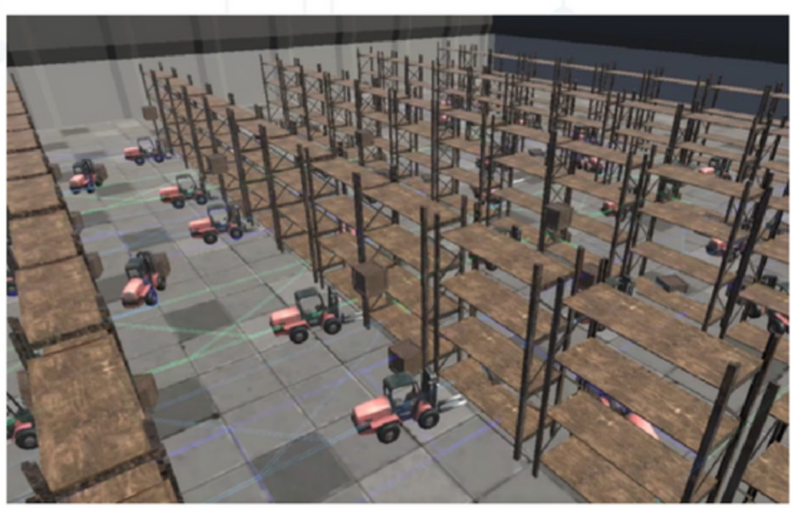
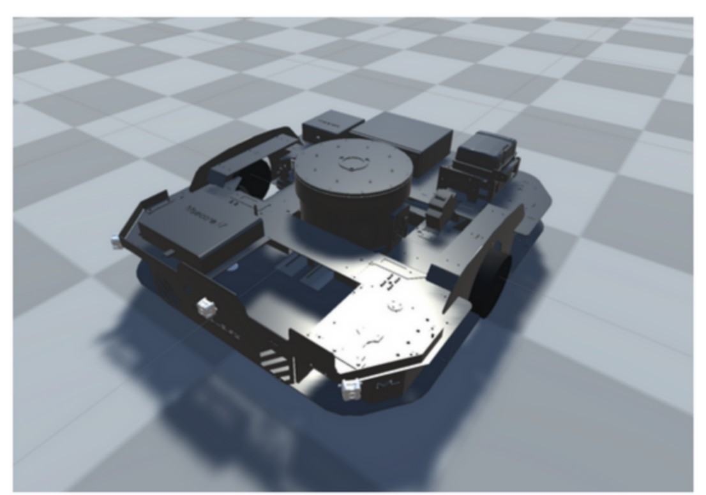
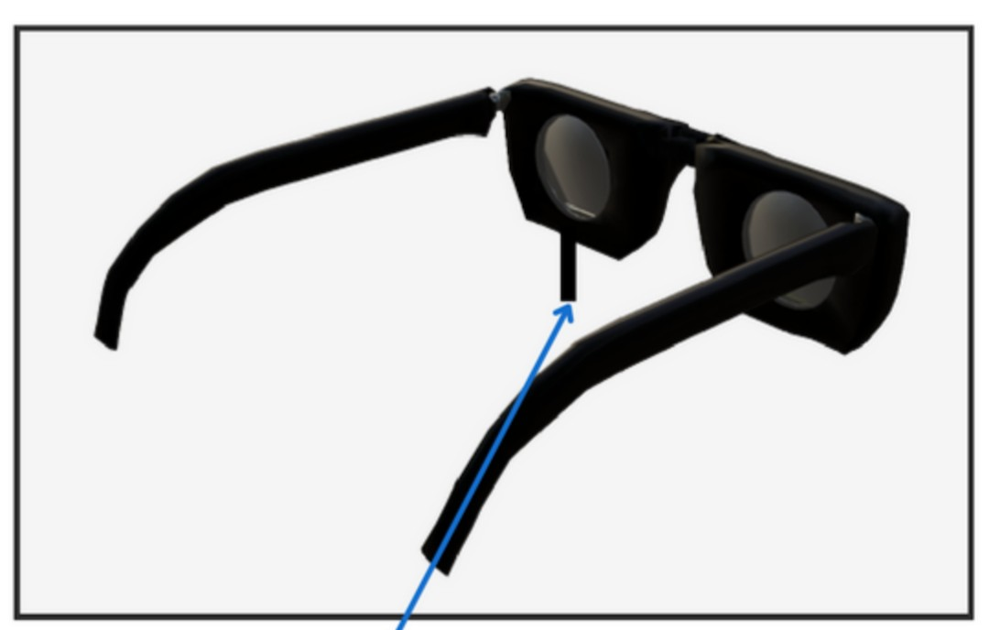
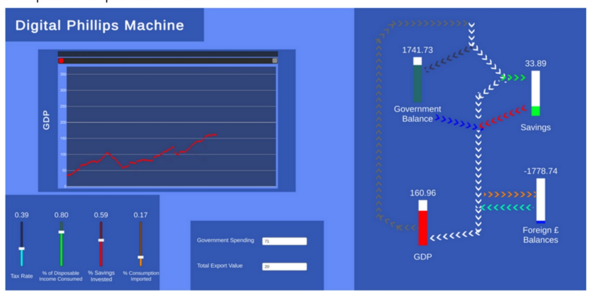

Selected work
Four projects
Two were built professionally, in the digital division of a logistics group. Two were built in my own time. Each write-up covers the problem, the decisions behind the build, and where it ended up.

Virtual Reality Digital Twin →
Rebuilds a real warehouse in VR from laser scans and replays the recorded movement of its vehicles and goods, so managers can watch a shift back and find the congestion.

Robot Testing Simulator →
Generates a driveable virtual copy of a warehouse robot from its design files and drives it through a real ROS stack, so iterations can be tested before anything is manufactured.

Augmented Reality Workstation →
A tethered AR headset shaped like a pair of glasses that replaces a multi-monitor desk setup, offloading all processing to the computer it plugs into.

Digital Phillips Machine →
A software rebuild of the MONIAC, a hydraulic computer that models an economy in water, built after my school's original sprang one leak too many and was scrapped.
Background
About this portfolio
These projects started life as a PDF I put together around 2022 for university applications, and it read like one: a cover letter, a “skills gained” section, and a lot of deference. This site is that work rewritten for engineers: the same projects and the same figures, reorganised around the problems, the trade-offs and the outcomes.
The projects themselves date from that period, so read them as a record of what I built then rather than a description of what I am working on now.
The two professional projects were built for a company that is not named here, and its clients are not named either. No source code is published, since that work is the property of my employer at the time. The write-ups are detailed enough to stand on their own, and I am happy to talk through any of the implementations directly.
Tools
Stack
Languages
C#, Python
Engines & simulation
Unity, SteamVR, ROS (Robot Operating System)
Hardware & 3D
Arduino, IMU sensors, Fresnel optics, 3D printing, Blender
Platforms
Windows, Linux, HTC Vive and other SteamVR headsets